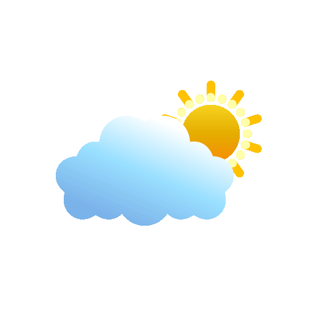

Esta obra está baixo unha Licenza Creative Commons Atribución-NonComercial-CompartirIgual 4.0 Internacional.
GaliciaWeather
Versión 1.2.1.
Esta aplicación está susentada pola base de datos de OpenWeatherMaps.
Esta obra está baixo unha Licenza Creative Commons Atribución-NonComercial-CompartirIgual 4.0 Internacional.
Actualizacións nas que estamos traballando
- 1- Engadir un widget
- 2- Gardar preferencias de usuario con base de datos